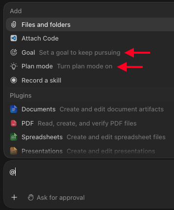
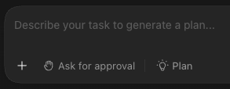

Plan Mode & Goals
When using Work or Codex, you can turn on Plan mode or set a Goal from the + button in the chatbox, or by typing @ and selecting either from the menu.

These tools help improve the quality of ChatGPT's work, as described below.
Plan mode
Once you've enabled Plan mode, you'll see an icon in your chatbox.

In Plan mode, ChatGPT will work with you to create a plan before doing any work. You provide any initial details, it asks any questions, and you go back and forth until you approve the plan.
Upon approval, ChatGPT will work through the plan until it is finished.
Many of the “mistakes” that ChatGPT makes come from it making incorrect assumptions. By creating a plan that specifies the major decisions and design choices beforehand, you install guardrails that keep ChatGPT's work within expectations.
Goals
In your Work/Codex chat, you can set a Goal that keeps ChatGPT grounded and gives it an objective.
If you don't have a specific solution in mind or aren't sure about the specifics, you can hand all that responsibility over to ChatGPT by setting a Goal.
In your Goal, specify the requirements of what you want, and ChatGPT will simply work to make it happen.
If your work is detail-oriented, Plan mode is the better fit.